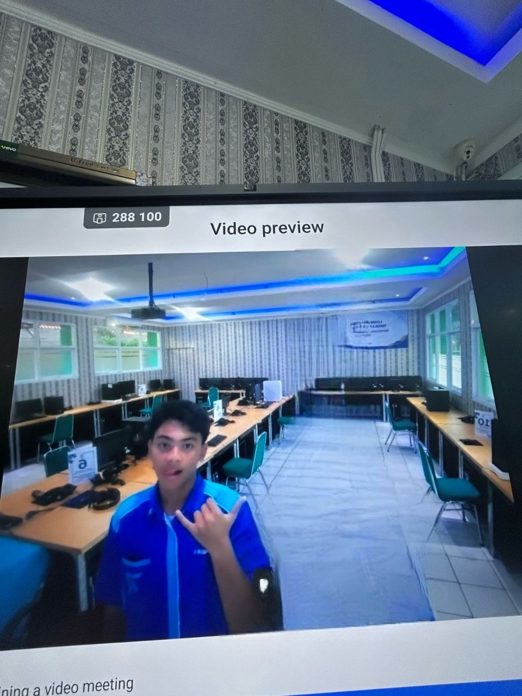
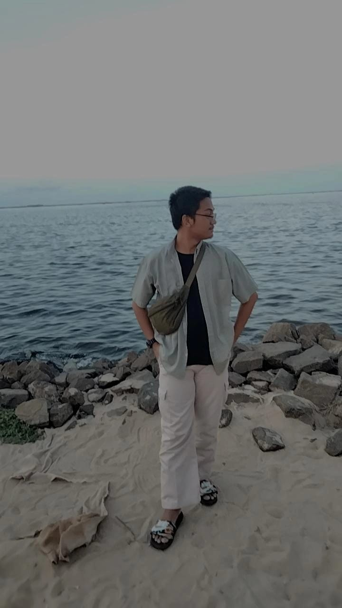

Fadlan Muzacky
Ketua kelompok

M Haikal Zamzami
Anggota kelompok

Adam Rais Ichsan Kamil
Anggota kelompok

Ratasya Andini
Anggota kelompok
FHDR (Fahadara Project) merupakan suatu inisiatif digital kolaboratif yang dibentuk oleh sekelompok siswa sebagai bagian dari kegiatan edukasi berbasis kunjungan ke Taman Mini Indonesia Indah (TMII). Nama “Fahadara” merupakan akronim yang berasal dari nama-nama anggota kelompok, yang mencerminkan semangat kerja sama, inovasi, serta kecintaan terhadap budaya Indonesia.
Proyek ini bertujuan untuk menyajikan hasil observasi dari berbagai mata pelajaran dalam bentuk media digital yang tidak hanya informatif, namun juga interaktif dan menarik. Dengan memanfaatkan teknologi web, FHDR menghadirkan sebuah platform edukatif yang mendokumentasikan kekayaan budaya Indonesia melalui visualisasi modern dan desain yang menarik. Seluruh data yang diperoleh dari Lembar Kerja Peserta Didik (LKPD) diolah menjadi konten digital yang mudah diakses dan dipahami oleh berbagai kalangan.
Visi FHDR adalah menjadi penghubung antara pengalaman lapangan dengan pembelajaran digital yang inovatif. Melalui proyek ini, para peserta didik diberi kesempatan untuk mengembangkan kemampuan berpikir kritis, bekerja sama dalam tim, serta keterampilan desain grafis dan penguasaan teknologi informasi. FHDR tidak hanya berfungsi sebagai laporan kunjungan, melainkan juga sebagai manifestasi bahwa proses pembelajaran dapat dikemas secara kreatif dan efektif.
Selain itu, FHDR juga berperan sebagai sarana pengembangan kapasitas peserta dalam mengelola proyek secara profesional, meningkatkan kemampuan problem solving, dan menumbuhkan rasa tanggung jawab atas tugas yang diemban. Pendekatan pembelajaran berbasis proyek ini diharapkan dapat memperkaya pemahaman akademik sekaligus meningkatkan keterampilan praktis yang relevan dengan kebutuhan zaman.
Ke depannya, FHDR berkomitmen untuk terus melakukan pengembangan platform dengan menambahkan fitur interaktif serta memperluas konten edukasi, agar dapat menjangkau audiens yang lebih luas serta memberikan kontribusi signifikan dalam dunia pendidikan. Proyek ini menjadi bukti nyata bahwa sinergi antara kreativitas dan teknologi mampu menghadirkan metode pembelajaran yang inovatif dan berdaya guna dalam mengenalkan warisan budaya Indonesia kepada generasi muda.
Berikut adalah anggota kami
Ketua kelompok
Anggota kelompok
Anggota kelompok
Anggota kelompok
Nama Fahadara diambil dari gabungan nama anggota kelompok: Fadlan, Haikal, Adam, dan Ratasya.
Logo ini terinspirasi dari bentuk geometris sederhana yang melambangkan kekuatan dan kesatuan dengan warna biru sebagai simbol teknologi dan masa depan.
Desain website FHDR terinspirasi dari website Persona 3 Reload (P3R), dengan gaya minimalis, futuristik, dan penggunaan warna biru serta putih yang elegan.
Website ini dikembangkan menggunakan Visual Studio Code sebagai editor utama, dengan memanfaatkan kombinasi HTML, CSS, dan JavaScript.
Pengembangan dibantu oleh ChatGPT untuk perbaikan struktur dan logika kode. Versi akhir dari website ini dihosting secara gratis menggunakan Vercel dan dikontrol menggunakan GitHub untuk pengelolaan versi dan kolaborasi kode.
Seluruh konten, tampilan, dan animasi disesuaikan dengan gaya visual proyek FHDR yang terinspirasi dari desain futuristik biru-putih.